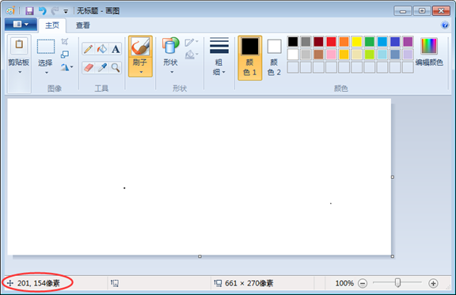
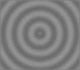
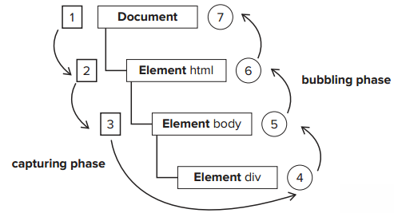

奥特曼打小怪兽，在需要的时候触发大招行为，那么“需要的时候”其实就是指事件。
当奥特曼即将被打趴下（事件被触发）的时候就会发大招（执行函数）。
在一个程序中，我们决定做了用户做了事情之后该做什么
事件的原理和hover类似。可以做到:hover做不到的事，:hover只能操作当前的元素，但是事件绑定之后可以选择任何元素。
事件触发三要素：通过谁触发？ 通过什么触发？触发后要做什么？
事件的写法：
w3c标准：事件写在行内，但是因为结构和行为要分离，所以我们一般情况下用JavaScript的方法来绑定事件，只有再极少数情况下，才将事件写在行内，事件的绑定方法：
浏览器中的节点(对象).on+事件句柄 = function( ){
要干什么？（放在浏览器中，不执行，当事件发生的时候再执行。）
}
oDiv.onclick=function(){
alert（1）
}
事件总结：事件是给浏览器定义一个预处理函数，当事件触发的时候，执行函数，这就是事件。
当事件被触发的时候奥特曼会得到一个信息（事件对象），包含了跟事件相关的一些属性和方法的封装（如：事件发生的元素、键盘按键的状态、鼠标的位置、鼠标按钮的状态等），只有事件在触发的时候才会得到。
oDiv.onmousedown=function(e){
alert（e）;
}
JS缺德定律：事件对象有兼容问题；
所以我们先做好兼容再去使用事件对象：
e=e || window.event;
alert (e.buttons)观察.buttons的返回值；
鼠标事件及方法；

键盘事件：keydown、keyup、keypress
document.onkeydown = function(e){
console.log(e.keyCode)
}
键盘上每一个键都有一个唯一的编码，用来识别当前用户正在操作的是键盘上哪一个键
有兼容问题
e.keyCode || e.which
特殊键码：是否按下alt ctrl 和 shift
e.altKey
e.ctrlKey
e.shiftKey
返回值是布尔值；
可以用来判断组合键
if（e.keyCode==13&&e.altKey）{
alert('同时按下了enter和alt')；
}
练习
一串内容跟随鼠标
小键盘控制元素上下左右移动
默认行为（浏览器）
有一些html元素默认的行为，比如说a标签，点击后有跳转动作；form表单中的submit类型的input有一个默认提交跳转事件；reset类型的input有重置表单行为。
但是，有些时候我们是不需要默认事件的，所以就需要阻止默认事件
return false；
if(e.preventDefault) {
e.preventDefault();
}else {
window.event.returnValue = false;
//return false;
}
1、右键菜单（上下文菜单） oncontextmenu
2、表单提交事件 onsubmit
练习
1、输入框模拟select下拉菜单
2、表格即时编辑
事件流
子元素的事件被触发时，父级也会被触发（冒泡）
一个完整事件流包含 捕获阶段 ---> 目标阶段 --->冒泡阶段
事件冒泡

Netscape认为，石头先扔进河里，再从河里确定了一个扔石头的点，从外往内逐渐精确的过程（捕获）
w3c认为，石头扔进去先到达准确的那个点，涟漪从内往外扩散（冒泡）
事件流：事件执行的顺序

子元素的事件被触发时，父级也会被触发（冒泡）
一个完整事件包含 捕获阶段 ---> 目标阶段 --->冒泡阶段
冒泡是可以阻止的
e.stopPropagation( );
e.cancelBubble=true;//兼容IE
事件监听
DOM0级事件处理，是一种赋值方式，是被所有浏览器所支持的，简单易懂容易操作；
DOM2级事件处理是所有DOM节点中的方法，可以重复监听，但是浏览器兼容存在问题；
oDiv.onclick = function(){ .... } //DOM0级
//DOM2级
if(window.attachEvent){
oDiv.attachEvent("onclick", function(){ ... }); // IE只有冒泡阶段,所以没有第三个参数，而且需要加on；
}else{
oDiv.addEventListener( "click", function(){ ... },false); // false指冒泡阶段
}
//移除事件监听，第二个参数为必须，移除的事件处理函数
oDiv.removeEventListener( "click",fn）
oDiv.detachEvent("onclick",fn)
鼠标滚轮事件onmousewheel模拟滚动条
事件委托（事件代理）委派
什么是事件委托：全班同学都要做《五年高考三年模拟》，每个同学自己去书店买？不用，委托老师帮你们买，同学们只管认真做题就好啦，好开心。
事件委托就是利用事件冒泡，只指定一个事件处理程序，就可以处理某一类型的所有事件
使用场景主要用于事件源不确定的情况，可以把事件委托给父级
判断事件源：
e.target || e.srcElement
练习
1、表格编辑事件委托版
2、拖拽